Introdução à economia
Aula 12 - Oligopólio
Oligopólio
Poucos vendedores e decisões interdependentes
01 - Poucas firmas e interdependência
02 - O duopólio dos produtores de água
03 - As referências competitiva e monopolista
04 - Conluio, cartel e divisão do mercado
05 - O incentivo para descumprir o acordo
07 - Número de firmas, efeito produção e efeito preço
08 - Comércio internacional e concorrência
09 - Cournot, Bertrand e Stackelberg
Cooperação e teoria dos jogos
10 - Estratégias, resultados e melhores respostas
11 - O dilema dos prisioneiros
12 - Equilíbrio e resultado coletivo
13 - O cartel como dilema dos prisioneiros
14 - OPEP e o mercado de petróleo
16 - Recursos comuns e perfuração de poços
17 - Cooperação e bem-estar da sociedade
18 - Jogos repetidos e o valor do futuro
19 - Reciprocidade e a estratégia tit-for-tat
Política de concorrência e controvérsias
21 - O telefonema entre companhias aéreas
22 - Fixação de preço de revenda
24 - Vinculação de produtos e poder de mercado
25 - Dois cinemas e dois filmes
26 - O caso histórico da Microsoft
27 - O caso Google no recorte de 2015
Conclusão e exercícios
01 - Poucas firmas e interdependência
⛽ Imagine uma cidade atendida por apenas dois postos de combustível. Uma redução de preço em um posto pode atrair clientes do outro. O concorrente pode responder reduzindo seu próprio preço.
Um oligopólio é uma estrutura de mercado com poucos vendedores relevantes, oferecendo produtos semelhantes ou idênticos. Também pode haver diferenciação entre suas ofertas. O ponto central é a interdependência estratégica: a decisão de uma firma afeta o resultado das outras, e cada uma precisa considerar as possíveis respostas dos rivais.
O capítulo apresenta o mercado de bolas de tênis como exemplo de poucos produtores. Essa descrição pertence à época do livro, não a um levantamento atual da estrutura desse mercado.
Teoria dos jogos é o estudo das decisões em situações estratégicas. Ela ajuda a compreender preços, quantidades, publicidade, entrada e outras decisões cujo resultado depende das escolhas de mais de um agente.
Pergunta da aula: por que firmas que ganhariam mais coordenando suas decisões podem acabar competindo entre si?
Base: Mankiw, capítulo 17, Oligopoly. A abertura está na página 365 do PDF. O título e o texto começam na 366 e o capítulo termina na 387, incluindo os exercícios. No livro, são as páginas impressas 337 a 358.
02 - O duopólio dos produtores de água
💧 Um duopólio é um oligopólio com dois vendedores. No exemplo do capítulo, dois proprietários de poços abastecem uma cidade. Vamos chamá-los de João e Maria, adaptando os nomes Jack e Jill.
Para isolar a decisão estratégica, o exemplo supõe custo total de produção igual a zero. Assim, receita e lucro coincidem. Essa hipótese simplifica o exercício e não descreve os custos reais de abastecimento de água.
Se \(q_J\) e \(q_M\) são as quantidades dos produtores:
\[Q=q_J+q_M,\qquad P=120-Q.\]
| Quantidade total \(Q\) | Preço \(P\) | Receita e lucro conjunto \(PQ\) |
|---|---|---|
| 0 | 120 | 0 |
| 20 | 100 | 2.000 |
| 40 | 80 | 3.200 |
| 60 | 60 | 3.600 |
| 80 | 40 | 3.200 |
| 100 | 20 | 2.000 |
| 120 | 0 | 0 |
Pontos selecionados da tabela do capítulo. Quantidades em galões e valores monetários na unidade do exemplo.
O preço depende da produção total. Cada produtor recebe o preço de mercado multiplicado pela quantidade que ele próprio vende: \(\pi_J=(120-q_J-q_M)q_J\) e \(\pi_M=(120-q_J-q_M)q_M\).
03 - As referências competitiva e monopolista
Na concorrência perfeita, a referência é \(P=CMg\). Como o custo marginal do exercício é zero, o resultado competitivo é \(P=0\) e \(Q=120\).
Um monopolista escolheria a quantidade que maximiza o lucro conjunto:
\[\pi(Q)=(120-Q)Q=120Q-Q^2.\]
\[RMg=120-2Q=CMg=0\quad\Rightarrow\quad Q_m=60,\quad P_m=60.\]
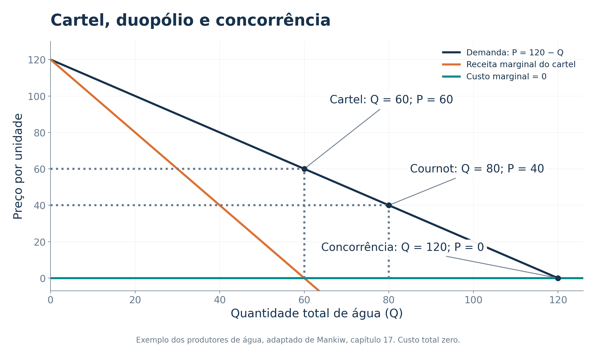
O monopolista obteria lucro de \(60\times60=3.600\). Sua produção é menor que a quantidade eficiente do exemplo, pois algumas unidades com disposição a pagar positiva deixam de ser consumidas mesmo tendo custo zero.
O ponto de Cournot, indicado no gráfico, será explicado pelas decisões individuais dos dois produtores. Ele não resulta de uma escolha conjunta.
04 - Conluio, cartel e divisão do mercado
Um acordo entre firmas sobre preços ou quantidades é chamado de conluio. O grupo que coordena sua atuação por esse acordo forma um cartel.
Se João e Maria conseguirem agir como um monopolista, escolherão \(Q=60\) e \(P=60\), obtendo lucro conjunto de 3.600.
| Divisão igual do acordo | João | Maria | Total |
|---|---|---|---|
| Quantidade | 30 | 30 | 60 |
| Preço recebido | 60 | 60 | 60 |
| Lucro | 1.800 | 1.800 | 3.600 |
O acordo precisa definir quanto cada firma produzirá e como verificar se cada uma cumpre sua parte. Quanto maior a parcela atribuída a uma firma, maior seu lucro dentro do acordo.
As dificuldades incluem disputas sobre a divisão do mercado, diferenças de custos, monitoramento e incentivos para descumprir as cotas. A política de concorrência também pode impedir acordos que restrinjam a competição.
Interesse coletivo dos vendedores: limitar a quantidade para sustentar o preço. Interesse individual: vender mais, aproveitando o preço sustentado pela contenção dos demais.
05 - O incentivo para descumprir o acordo
Suponha que Maria mantenha sua produção em 30. João compara duas escolhas:
| Escolha de João | Quantidade total | Preço | Lucro de João | Lucro de Maria |
|---|---|---|---|---|
| Produzir 30 | 60 | 60 | 1.800 | 1.800 |
| Produzir 40 | 70 | 50 | 2.000 | 1.500 |
João ganha 200 ao expandir suas vendas, embora o lucro conjunto caia de 3.600 para 3.500. Parte do custo da redução de preço recai sobre Maria.
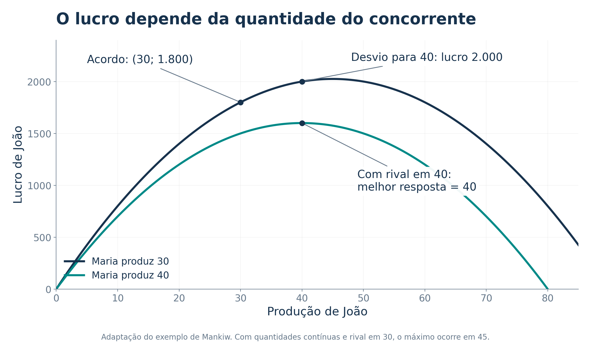
Maria tem o mesmo incentivo. Se ambos produzirem 40, o preço cairá para 40 e cada um ganhará 1.600.
Precisão do exemplo: passar de 30 para 40 demonstra um desvio lucrativo. Se qualquer quantidade contínua for permitida, a melhor resposta a 30 será 45. Já a melhor resposta a 40 será exatamente 40.
06 - O equilíbrio de Nash
No equilíbrio de Nash, cada agente escolhe sua melhor resposta às estratégias dos demais. Ninguém consegue melhorar seu próprio resultado mudando sozinho de decisão, mantendo as escolhas dos outros.
No exemplo, com Maria produzindo 40, João compara:
| Produção de João | Preço de mercado | Lucro de João |
|---|---|---|
| 30 | 50 | 1.500 |
| 40 | 40 | 1.600 |
| 50 | 30 | 1.500 |
O argumento é simétrico para Maria. O equilíbrio é \(q_J=q_M=40\), \(Q=80\) e \(P=40\).
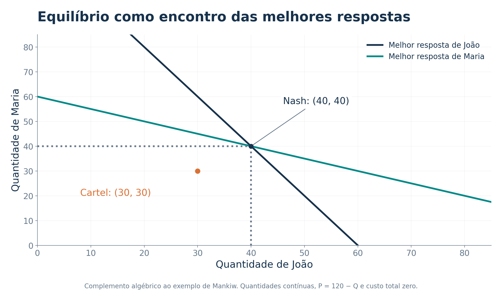
Complemento algébrico: a maximização de \(\pi_J=(120-q_J-q_M)q_J\) fornece \(q_J=(120-q_M)/2\). Para Maria, \(q_M=(120-q_J)/2\). Resolvendo as duas equações, encontramos 40 para cada um.
Equilíbrio não significa o maior lucro conjunto. Ambos prefeririam o resultado do cartel se conseguissem impedir desvios.
07 - Número de firmas, efeito produção e efeito preço
Ao ampliar sua produção, a firma compara dois efeitos:
- Efeito produção: vender mais a um preço acima do custo marginal aumenta sua receita líquida.
- Efeito preço: a maior quantidade total reduz o preço recebido nas unidades que a própria firma já vendia.
Com mais firmas semelhantes, cada uma responde por uma parcela menor do mercado. No modelo de escolha de quantidades, o efeito preço sobre as vendas de cada firma perde importância e o resultado se aproxima da referência competitiva.
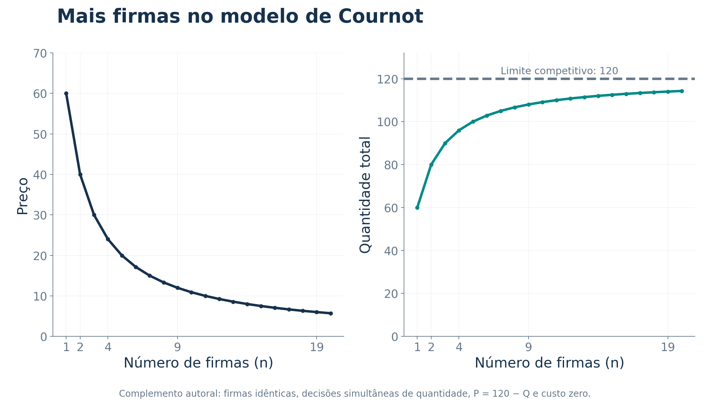
Complemento ao exemplo do livro: com \(n\) firmas idênticas, \(P=120-Q\) e custo zero, o equilíbrio de Cournot é:
\[q_i=\frac{120}{n+1},\qquad Q=\frac{120n}{n+1},\qquad P=\frac{120}{n+1}.\]
| Firmas | Preço | Quantidade total |
|---|---|---|
| 2 | 40 | 80 |
| 4 | 24 | 96 |
| 9 | 12 | 108 |
Esse resultado depende das hipóteses do modelo. Contar firmas, isoladamente, não determina o grau de competição de qualquer mercado real.
08 - Comércio internacional e concorrência
O capítulo usa um exemplo hipotético em que três países possuem dois fabricantes de automóveis cada. Sem comércio entre eles, os consumidores de cada país escolhem entre apenas duas firmas.
Com comércio, os compradores passam a considerar os seis produtores. O acesso a mais alternativas pode limitar o poder de mercado dos fabricantes nacionais e aproximar o preço do custo marginal.
| Mercado fechado do exemplo | Mercado integrado do exemplo |
|---|---|
| Dois produtores disponíveis por país | Até seis produtores disponíveis ao consumidor |
| Menor possibilidade de substituição entre fornecedores | Maior conjunto de alternativas |
| Maior espaço para restringir a produção no modelo | Pressão competitiva potencialmente maior |
Esse benefício é adicional ao argumento das vantagens comparativas. O comércio pode melhorar o resultado também por intensificar a concorrência.
Condições relevantes: custos de transporte, tarifas, capacidade, diferenciação e acordos entre empresas podem limitar o efeito. A integração de mercados não garante automaticamente concorrência perfeita.
09 - Cournot, Bertrand e Stackelberg
Complemento para os concursos: o capítulo desenvolve a escolha individual de quantidades. As provas também costumam comparar modelos em que mudam a variável estratégica e a ordem das decisões.
| Modelo | Decisão das firmas | Ideia central |
|---|---|---|
| Cournot | Quantidades escolhidas simultaneamente | Cada uma escolhe a melhor quantidade dada a quantidade rival |
| Bertrand | Preços escolhidos simultaneamente | Com bem homogêneo, custos marginais iguais e capacidade suficiente, a disputa pode levar a \(P=CMg\) |
| Stackelberg | Uma firma escolhe a quantidade antes da outra | A líder antecipa a reação da seguidora |
| Cartel | Coordenação de quantidades ou preços | As firmas procuram maximizar o lucro conjunto |

Em Stackelberg, a seguidora reage com \(q_S=(120-q_L)/2\). A líder considera essa reação e escolhe \(q_L=60\). A seguidora produz 30, o preço fica em 30 e os lucros são 1.800 e 900, respectivamente.
Assim, nesse exemplo, a líder ganha mais que os 1.600 de Cournot. A vantagem de liderança é um resultado das hipóteses clássicas, não uma regra sobre toda situação em que alguém decide primeiro.
🏆 Vamos a um jogo rápido!
Retome \(P=120-q_J-q_M\) e custo total zero.
a) Se os dois produtores combinarem produzir 30 cada, qual será o preço e quanto cada um ganhará?
b) Se João produzir 40 e Maria mantiver 30, quem ganha com o desvio?
c) Se ambos produzirem 40, João deve aumentar sozinho para 50?
Respostas comentadas
a) \(Q=60\), \(P=60\) e lucro individual de \(30\times60=1.800\).
b) O preço cai para 50. João ganha \(40\times50=2.000\), e Maria, \(30\times50=1.500\). João melhora sua situação e reduz a de Maria.
c) Não. Ao produzir 50, João levaria a produção total a 90 e o preço a 30. Seu lucro cairia de 1.600 para \(50\times30=1.500\).
Lição: um acordo pode ser desejável para o grupo e vulnerável à decisão individual. No equilíbrio, a melhor resposta depende da escolha do rival.
10 - Estratégias, resultados e melhores respostas
Um jogo identifica os jogadores, suas estratégias, os resultados de cada combinação e as informações disponíveis quando decidem.
Em uma matriz de resultados, precisamos saber:
- Quem escolhe a linha e quem escolhe a coluna.
- De quem é o primeiro número de cada par.
- Se o jogador prefere números maiores, como lucros, ou menores, como custos e anos de prisão.
Melhor resposta: escolha mais vantajosa diante de uma estratégia específica do outro jogador.
Estratégia dominante: escolha que é melhor independentemente da estratégia do outro. Uma firma pode ter melhores respostas diferentes para decisões diferentes do rival e, portanto, não ter estratégia dominante.
Para identificar um equilíbrio de Nash em estratégias puras, procuramos uma combinação em que as duas escolhas sejam melhores respostas ao mesmo tempo. Alguns jogos têm mais de um desses equilíbrios. Outros não possuem equilíbrio em estratégias puras.
11 - O dilema dos prisioneiros
Na parábola do livro, Bonnie e Clyde decidem separadamente se confessam ou permanecem em silêncio. Cada um procura minimizar seu próprio tempo de prisão.
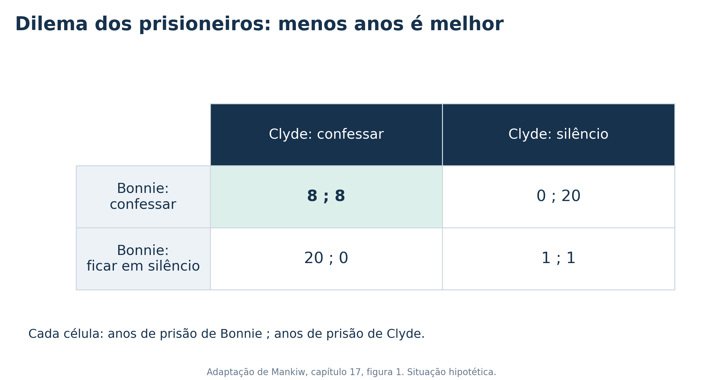
Observe a decisão de Bonnie:
- Se Clyde ficar em silêncio, confessar gera zero ano, contra um ano se ela também ficar em silêncio.
- Se Clyde confessar, confessar gera oito anos, contra vinte anos se ela ficar em silêncio.
Confessar é a estratégia dominante de Bonnie. O mesmo raciocínio vale para Clyde. O resultado é que ambos confessam e recebem oito anos, embora ambos preferissem a combinação de um ano para cada um.
Situação hipotética de teoria dos jogos, com as penas do exemplo de Mankiw. O exercício não descreve regras processuais ou penais reais.
12 - Equilíbrio e resultado coletivo
No dilema dos prisioneiros, confessar é melhor para cada um em qualquer escolha do outro. Por isso, a combinação de duas confissões é também um equilíbrio de Nash.
| Critério | Pergunta | Resposta na parábola |
|---|---|---|
| Dominância | Minha melhor decisão muda quando o outro muda? | Não. Confessar continua sendo melhor |
| Equilíbrio de Nash | Alguém ganha mudando sozinho, dado o que o outro fez? | Não, quando ambos confessam |
| Melhora para os dois | Existe outra combinação que ambos preferem? | Sim, os dois ficarem em silêncio |
O equilíbrio não é eficiente no sentido de Pareto entre os dois jogadores, pois o silêncio conjunto reduziria a pena dos dois. Esse julgamento considera seus resultados, não todos os efeitos sobre terceiros.
Um acordo anterior de silêncio não resolve, sozinho, o problema. Quando chega a hora de decidir, o incentivo individual para confessar permanece.
Relação importante: quando todos possuem estratégias dominantes e as escolhem, temos um equilíbrio de Nash. A existência de um equilíbrio de Nash não exige que todos possuam estratégias dominantes.
13 - O cartel como dilema dos prisioneiros
Agora cada produtor escolhe apenas entre 30 e 40 unidades, como no jogo apresentado no capítulo.
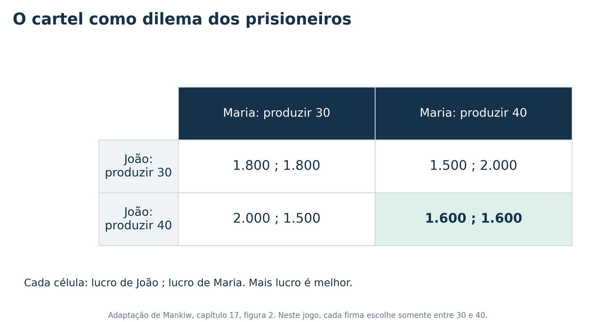
Para João:
- Se Maria produzir 30, produzir 40 rende 2.000, contra 1.800.
- Se Maria produzir 40, produzir 40 rende 1.600, contra 1.500.
Maria enfrenta os mesmos incentivos. Produzir 40 é dominante neste jogo com duas opções. O resultado é \((40,40)\), com lucro de 1.600 para cada um.
O acordo \((30,30)\) maximiza o lucro conjunto, mas cada firma consegue ganhar mais se for a única a descumpri-lo.
Distinção: quando qualquer quantidade contínua é permitida, 40 não é uma estratégia dominante. É a melhor resposta a 40. A dominância afirmada aqui depende do conjunto restrito de escolhas da matriz.
14 - OPEP e o mercado de petróleo
O capítulo apresenta a Organização dos Países Exportadores de Petróleo (OPEP) como caso de coordenação entre produtores. O problema econômico é semelhante ao dos poços de água: conter a oferta pode sustentar o preço, mas cada participante tem incentivo para vender uma parcela maior.
A organização surgiu em 1960, com Irã, Iraque, Kuwait, Arábia Saudita e Venezuela. Essa é a composição fundadora, não uma lista de membros atuais.
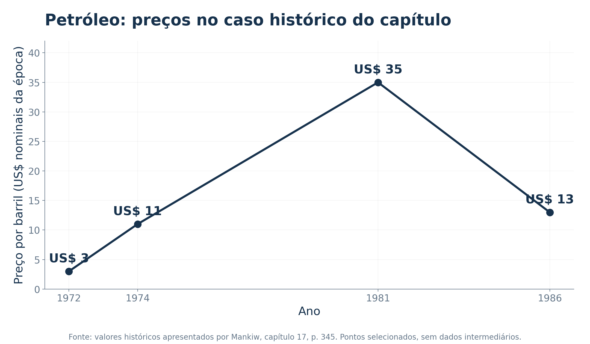
O livro associa a coordenação mais forte entre 1973 e 1985 à capacidade de sustentar preços elevados. Também relata disputas sobre níveis de produção e dificuldades de coordenação em meados dos anos 1980.
Leitura do caso: o cumprimento das cotas e os incentivos individuais afetam o acordo. Os preços também dependem da demanda, da oferta de outros produtores e de outros acontecimentos. A série não atribui toda variação de preço ao cartel.
Recorte histórico do capítulo, página impressa 345. Valores nominais da época.
🏆 Vamos a um jogo rápido!
Duas firmas escolhem entre preço alto e preço baixo. Os pares mostram os lucros de A e B, nessa ordem, em unidades monetárias.
| A escolhe / B escolhe | Preço alto | Preço baixo |
|---|---|---|
| Preço alto | 8, 8 | 2, 10 |
| Preço baixo | 10, 2 | 4, 4 |
a) Qual é a melhor resposta de A se B escolher preço alto? E se B escolher preço baixo?
b) Qual é o equilíbrio de Nash?
c) O resultado que maximiza o lucro conjunto é estável diante de um desvio unilateral?
Respostas comentadas
a) Preço baixo nos dois casos: \(10>8\) e \(4>2\).
b) Ambas escolhem preço baixo e recebem \((4,4)\). A estratégia é dominante para cada uma.
c) Não. Com dois preços altos, o lucro conjunto seria 16, mas uma firma poderia aumentar seu próprio lucro de 8 para 10 baixando sozinha o preço.
Jogo autoral para praticar a leitura da matriz. Não é uma questão de concurso.
15 - A corrida armamentista
O capítulo aplica a lógica do dilema dos prisioneiros à corrida armamentista entre Estados Unidos e União Soviética durante a Guerra Fria.
No modelo simplificado, cada país escolhe entre armar-se e desarmar-se. Cada um prefere evitar a vulnerabilidade diante de um rival armado e também valoriza a vantagem relativa de poder.
| País A / País B | B se arma | B se desarma |
|---|---|---|
| A se arma | Ambos ficam expostos ao arsenal rival | A ganha vantagem de poder, B fica vulnerável |
| A se desarma | A fica vulnerável, B ganha vantagem de poder | Ambos evitam a ameaça dos arsenais do exemplo |
Sob as preferências descritas na parábola, armar-se é a melhor decisão individual em qualquer escolha do rival. O equilíbrio deixa ambos expostos ao risco, embora o desarmamento conjunto fosse preferível para os dois.
Acordos enfrentam dificuldades de verificação e receio de descumprimento. A estrutura dos incentivos é semelhante à do cartel, mas os efeitos sobre terceiros e o bem-estar são diferentes.
Aplicação histórica e simplificada do modelo do livro, sem pretensão de explicar toda a política internacional do período.
16 - Recursos comuns e perfuração de poços
Duas firmas exploram um reservatório comum de petróleo que vale 12 milhões. Cada poço custa 1 milhão. Na parábola, a parcela extraída por cada empresa é proporcional ao número de poços que possui.
Se cada uma abrir um poço, cada firma obtém metade do petróleo e lucro de \(6-1=5\) milhões. Se apenas uma abrir um segundo poço, ela obtém \(8-2=6\) milhões e a rival, \(4-1=3\) milhões.
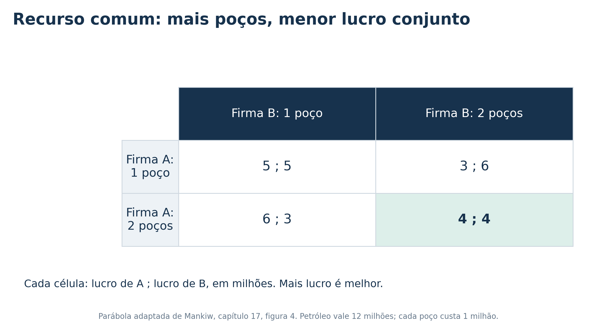
Abrir dois poços é dominante: \(6>5\) e \(4>3\). O equilíbrio gera lucro conjunto de 8 milhões, contra 10 milhões com apenas um poço para cada.
Os poços adicionais não aumentam o valor total do petróleo disponível. Eles ampliam o gasto para disputar o mesmo recurso. Esse é o desperdício presente no exemplo de recurso comum.
Parábola adaptada do capítulo. Os valores não representam uma avaliação real de campos petrolíferos ou de empresas específicas.
17 - Cooperação e bem-estar da sociedade
Cooperar pode melhorar o resultado dos participantes e produzir efeitos diferentes sobre quem está fora do jogo.
| Situação | Efeito da cooperação no modelo |
|---|---|
| Cartel de produtores | Aumenta lucros, restringe vendas e prejudica consumidores |
| Exploração de recurso comum | Evita gastos redundantes e preserva o excedente total |
| Corrida armamentista | Pode reduzir gastos e riscos compartilhados |
No exemplo da água, é possível calcular o excedente do consumidor e compará-lo com o lucro dos produtores:
\[EC=\frac{(120-P)Q}{2},\qquad EP=PQ,\qquad ET=EC+EP.\]
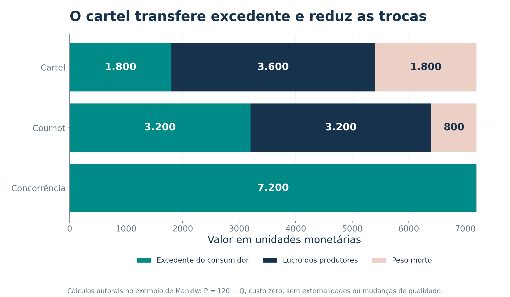
A competição entre os dois produtores reduz o peso morto de 1.800 para 800. Nesse modelo, a dificuldade de manter o cartel beneficia consumidores e aumenta o excedente total.
Pergunta essencial: cooperação entre quais agentes e com quais efeitos sobre terceiros? O interesse conjunto das firmas não mede todo o bem-estar.
18 - Jogos repetidos e o valor do futuro
Quando as firmas voltam a interagir, um desvio hoje pode afetar lucros futuros. No jogo com escolhas de 30 ou 40, o livro considera esta resposta: depois de um desvio, ambos passam a produzir 40 nas rodadas seguintes.
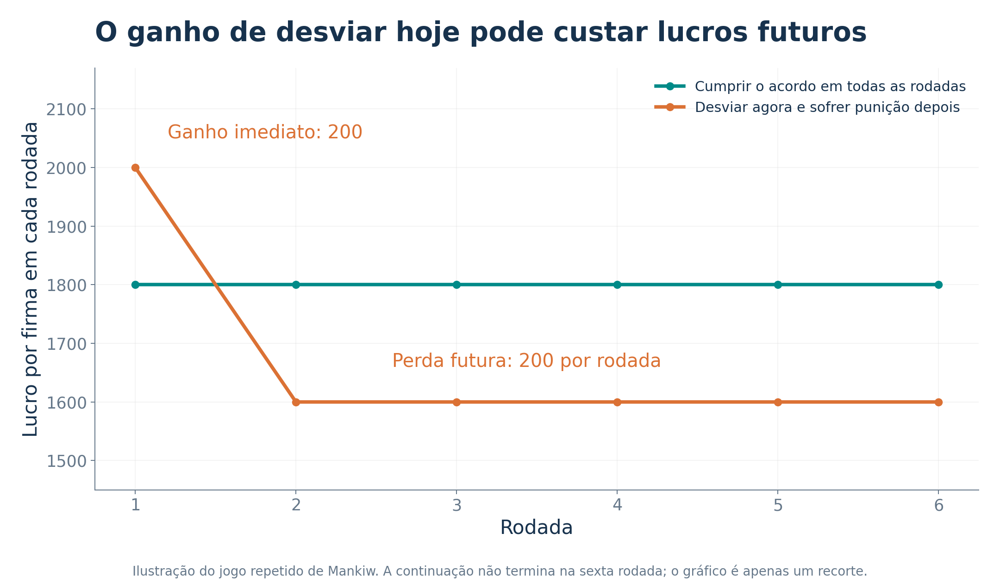
O desvio traz ganho imediato de 200, mas a punição reduz os lucros posteriores em 200 por rodada. A punição é compatível com a melhor resposta a um rival que produz 40.
Aprofundamento: em um horizonte indefinido, com fator de desconto \(0\leq\delta<1\), o acordo pode ser sustentado se:
\[\frac{1.800}{1-\delta}\geq2.000+\frac{1.600\delta}{1-\delta} \quad\Rightarrow\quad\delta\geq\frac{1}{2}.\]
O cálculo vale para as duas opções da matriz, desvio observável e a punição descrita. Se qualquer quantidade contínua for permitida, o melhor desvio é diferente e o limiar também muda.
Repetir um jogo não garante cooperação. A duração esperada da relação, a observação dos desvios e a importância dos ganhos futuros afetam os incentivos.
19 - Reciprocidade e a estratégia tit-for-tat
O capítulo relata os torneios de Robert Axelrod com programas que jogavam repetidamente o dilema dos prisioneiros.
A estratégia tit-for-tat, também chamada de reciprocidade, apresentou bom desempenho no torneio descrito:
- Começar cooperando.
- Nas rodadas seguintes, repetir a escolha do outro jogador na rodada anterior.
| Rodada | Escolha anterior do rival | Resposta da estratégia |
|---|---|---|
| 1 | Ainda não existe | Cooperar |
| 2 | Cooperou na rodada 1 | Cooperar |
| 3 | Não cooperou na rodada 2 | Não cooperar |
| 4 | Voltou a cooperar na rodada 3 | Cooperar |
A estratégia reage ao descumprimento e permite retomar a cooperação. Ela difere de uma punição que dura para sempre após o primeiro desvio.
O resultado do torneio não estabelece uma estratégia universalmente melhor. O desempenho depende dos oponentes, das regras, da duração e da possibilidade de erros na observação ou na execução.
Ligação com o oligopólio: a expectativa de interações futuras pode ajudar a sustentar coordenação, apesar do incentivo a desviar em uma rodada.
🏆 Vamos a um jogo rápido!
Julgue as afirmações e justifique.
a) Se cooperar aumenta o lucro conjunto dos produtores, a sociedade necessariamente fica melhor.
b) Na parábola do reservatório comum, os dois poços adicionais aumentam o lucro conjunto porque permitem extrair uma parcela maior.
c) O ganho de um desvio pode ser menor que a perda esperada de lucros futuros, permitindo cooperação em um jogo repetido.
Respostas comentadas
a) Falsa. Um cartel pode elevar os lucros restringindo a oferta e reduzindo o excedente do consumidor. Precisamos considerar os terceiros.
b) Falsa. O reservatório continua valendo 12 milhões. Com quatro poços, o custo total sobe de 2 para 4 milhões e o lucro conjunto cai de 10 para 8 milhões.
c) Verdadeira. No exemplo, o desvio rende 200 uma vez, mas a resposta dos rivais reduz o lucro nas rodadas futuras. O resultado depende da importância dessas rodadas e da credibilidade da resposta.
20 - Política de concorrência
O objetivo econômico da política de concorrência é limitar práticas que reduzam a competição e prejudiquem o bem-estar. No caso do cartel, o problema é a coordenação para restringir oferta e elevar preços.
O capítulo apresenta o desenvolvimento histórico da política antitruste nos Estados Unidos:
| Marco histórico | Papel na exposição do livro |
|---|---|
| Recusa judicial de exigir o cumprimento de acordos restritivos | Reduzir a capacidade de usar contratos para sustentar combinações de preços e produção |
| Sherman Act, 1890 | Reforçar a repressão a acordos restritivos e à monopolização |
| Clayton Act, 1914 | Fortalecer a política antitruste, incluindo incentivos à reparação privada dos danos |
O livro destaca a possibilidade de reparação civil em valor triplo no contexto norte-americano. A ideia econômica é ampliar o incentivo para que os prejudicados contestem práticas anticompetitivas.
A política também examina fusões que possam elevar excessivamente o poder de mercado. A avaliação precisa considerar eventuais eficiências e os efeitos sobre a concorrência.
Contexto histórico e institucional apresentado no capítulo. Os exemplos norte-americanos não constituem uma descrição da legislação brasileira.
21 - O telefonema entre companhias aéreas
O capítulo relata uma conversa entre Robert Crandall, da American Airlines, e Howard Putnam, da Braniff, divulgada pelo New York Times em fevereiro de 1983.
Na conversa, Crandall propôs que a concorrente aumentasse suas tarifas em 20% e indicou que acompanharia o aumento no dia seguinte. Putnam reagiu à proposta de discutir a fixação de preços e entregou a gravação ao Departamento de Justiça dos Estados Unidos.
O episódio levou a uma ação e, posteriormente, a um acordo que restringiu certas condutas e contatos de Crandall com executivos de outras companhias.
O mecanismo econômico
O aumento coordenado permitiria evitar que a empresa que elevasse o preço perdesse clientes para a concorrente que mantivesse a tarifa. O ganho conjunto das empresas viria da redução da concorrência por preço.
O caso ilustra a diferença entre decidir individualmente, considerando a possível reação de rivais, e propor uma coordenação explícita de preços.
Síntese do caso histórico apresentado por Mankiw, página impressa 350. Não se trata de uma descrição das práticas atuais das empresas.
22 - Fixação de preço de revenda
Imagine um fabricante que vende um equipamento às lojas por 50 e exige que elas o revendam por 75. Essa prática é chamada de fixação de preço de revenda no exemplo do capítulo.
À primeira vista, ela limita a concorrência de preços entre os varejistas. O livro apresenta também um possível argumento de eficiência:
- Uma loja investe em demonstrações e vendedores preparados.
- O cliente usa esse atendimento para conhecer o produto.
- Depois compra em outra loja, que cobra menos e não oferece o serviço.
A segunda loja pode aproveitar o investimento da primeira. Esse problema de carona reduz o incentivo para oferecer demonstração e atendimento.
Ao preservar uma margem, o fabricante pode tentar sustentar o serviço prestado pelas lojas. O capítulo também observa que o fabricante deseja vender seus produtos e não necessariamente ganha com uma redução das vendas causada pela coordenação entre varejistas.
Questão de análise: a restrição protege um serviço útil, facilita uma coordenação prejudicial ou produz ambos os efeitos? A existência de uma possível justificativa não prova benefício líquido em todo caso.
23 - Preços predatórios
Uma empresa pode reduzir preços para competir por consumidores. A hipótese de preço predatório envolve uma estratégia diferente: aceitar perdas para afastar um concorrente e recuperar essas perdas posteriormente com preços maiores.
O capítulo usa duas companhias aéreas hipotéticas. A incumbente tem 80% do mercado, e a entrante, 20%. Uma guerra de preços pode impor perdas importantes à incumbente, que atende a maior parte dos consumidores.
| Etapa da hipótese | Pergunta econômica |
|---|---|
| Preços baixos e perdas iniciais | A firma consegue financiar a estratégia? |
| Saída ou enfraquecimento do rival | O rival precisa sair ou pode reduzir temporariamente sua operação? |
| Aumento posterior de preços | A firma conseguirá recuperar as perdas sem atrair nova entrada? |
O livro apresenta o ceticismo de economistas sobre a rentabilidade da estratégia em certas situações. Um rival menor pode reduzir sua oferta durante a disputa, enquanto a incumbente arca com uma parcela maior das perdas.
Desafio da política: distinguir descontos que beneficiam consumidores de uma estratégia de exclusão com dano futuro. Observar apenas um preço baixo não resolve essa distinção.
24 - Vinculação de produtos e poder de mercado
Na vinculação de produtos, ou tying, a aquisição de um produto fica associada à de outro. O capítulo discute o caso de um estúdio que oferece dois filmes conjuntamente, em vez de vendê-los separadamente.
Uma crítica é que o vendedor aproveita a procura pelo produto desejado para impor a compra de outro produto. O livro mostra por que uma versão simples desse argumento exige cuidado.
Se um cinema está disposto a pagar 20 mil por um filme e zero pelo outro, sua disposição total a pagar pelo pacote continua sendo 20 mil. Acrescentar um item sem valor para o comprador não cria, por si só, mais disposição a pagar.
Isso não encerra a análise. A venda conjunta pode:
- Facilitar a captura de receitas quando compradores valorizam os componentes de maneira diferente.
- Gerar conveniência ou economias de integração.
- Em determinadas condições, dificultar o acesso de rivais ao mercado.
Conclusão do debate no capítulo: a avaliação depende do mecanismo econômico e de seus efeitos. A simples presença de um pacote não revela automaticamente o resultado para o bem-estar.
25 - Dois cinemas e dois filmes
Considere as disposições a pagar da parábola do capítulo, em milhares de unidades monetárias:
| Comprador | Filme A | Filme B | Pacote A + B |
|---|---|---|---|
| Cinema da cidade | 15 | 5 | 20 |
| Cinema do interior | 5 | 15 | 20 |
Venda separada: cobrar 15 por filme faz cada cinema comprar seu título preferido. A receita total é \(15+15=30\) mil. Cobrar 5 por filme e vender os dois a ambos geraria apenas 20 mil.
Venda conjunta: cobrar 20 pelo pacote faz cada cinema adquirir os dois filmes. A receita total passa a \(20+20=40\) mil.
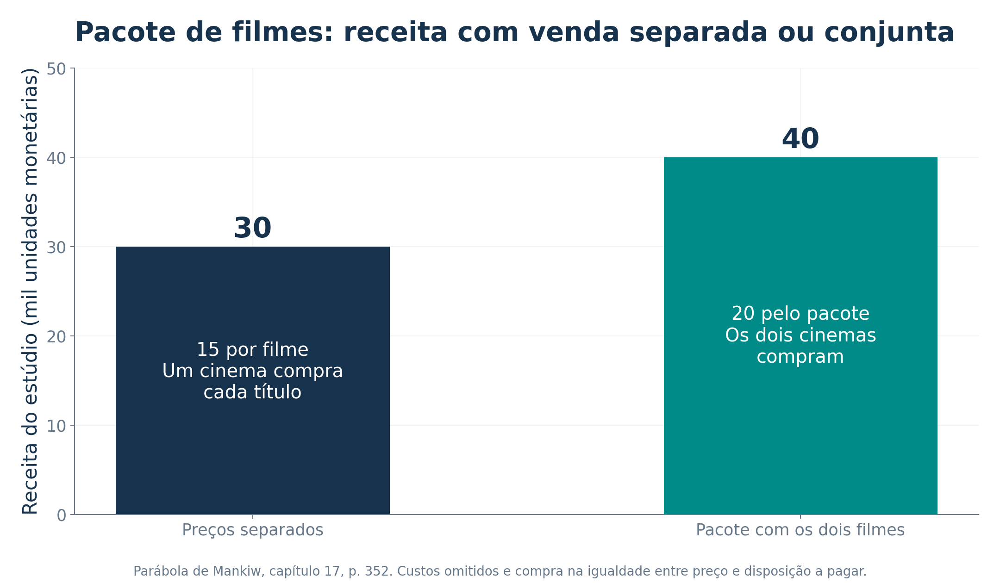
O pacote reduz a diferença entre as disposições totais a pagar e permite ao vendedor capturar mais receita. O capítulo relaciona esse mecanismo à discriminação de preços.
O exercício omite custos e supõe que a compra acontece na igualdade entre preço e disposição a pagar. O aumento de receita do vendedor, sozinho, não determina a variação do bem-estar total.
26 - O caso histórico da Microsoft
O capítulo examina o processo iniciado pelo governo dos Estados Unidos contra a Microsoft em 1998, envolvendo o poder de mercado da empresa e a integração do navegador ao Windows.
| Argumento do governo, no caso descrito | Argumento da empresa |
|---|---|
| A integração e outras práticas poderiam dificultar a entrada de concorrentes e proteger o poder de mercado | A inclusão de novas funções faria parte da evolução do produto e poderia melhorar a compatibilidade e a facilidade de uso |
| A elevada participação nos sistemas operacionais indicava poder de mercado | Mudanças tecnológicas e concorrentes existentes limitariam esse poder |
Cronologia apresentada no livro
- 1999: decisão de primeira instância reconheceu poder de monopólio e abuso desse poder.
- 2000: o juiz determinou a divisão da empresa.
- 2001: a instância de apelação derrubou a ordem de divisão.
- 2002: um acordo impôs restrições a práticas comerciais e permitiu que o navegador permanecesse integrado ao sistema.
Problema econômico: distinguir integração que melhora o produto de práticas que excluem rivais e dificultam a inovação. O livro não reduz toda a controvérsia a uma única característica técnica do produto.
Recorte histórico das páginas impressas 352 e 353, sem atualização dos processos posteriores mencionados pelo livro.
27 - O caso Google no recorte de 2015
O quadro de notícias do capítulo reproduz uma reportagem de 15 de abril de 2015 sobre a atuação da Comissão Europeia em relação ao Google.
O foco era a acusação de favorecer o próprio serviço de comparação de compras nos resultados de busca. A reportagem também mencionava uma investigação sobre o sistema Android.
Perguntas econômicas ilustradas pelo caso
- Uma plataforma pode usar uma posição relevante em um serviço para dificultar a competição em outro?
- Como distinguir uma melhoria na apresentação do produto de um tratamento que prejudica injustificadamente concorrentes?
- Que efeitos aparecem para consumidores, empresas que dependem da plataforma e novos entrantes?
O quadro também mostra que autoridades de países diferentes podem analisar uma mesma prática de forma distinta, considerando seus marcos institucionais e as condições dos mercados.
Data do relato: este slide explica a notícia histórica incluída no livro. As acusações e investigações descritas são as daquele momento, sem afirmar que continuam pendentes hoje.
28 - Conclusão: incentivos individuais e concorrência
O oligopólio combina poucos vendedores relevantes com decisões interdependentes. Para entender seu resultado, precisamos conhecer as escolhas disponíveis e como cada firma responde às demais.
No exemplo de quantidades do capítulo:
\[Q_{cartel}=60<Q_{Cournot}=80<Q_{competitivo}=120,\]
\[P_{cartel}=60>P_{Cournot}=40>P_{competitivo}=0.\]
O cartel maximiza o lucro conjunto, mas os participantes têm incentivo para desviar. O equilíbrio de Nash descreve uma combinação de melhores respostas, sem garantir o melhor resultado coletivo.
Jogos repetidos podem sustentar cooperação quando os ganhos futuros são suficientemente importantes. O efeito social dessa cooperação depende de quem participa e de quem arca com seus efeitos.
A política de concorrência procura enfrentar práticas que restringem a competição. Nos casos mais controversos, precisa distinguir danos de possíveis eficiências, considerando preços, qualidade, entrada e inovação.
Para analisar um caso: identifique os jogadores, suas escolhas e os resultados. Encontre as melhores respostas e, depois, avalie os efeitos sobre consumidores e terceiros.
Referência: Mankiw, capítulo 17, seções 17-1 a 17-4. A comparação formal entre Cournot, Bertrand e Stackelberg e os cálculos adicionais foram incluídos como complementos didáticos para os exercícios.
29 - Exercícios de concursos públicos
12 exercícios: 6 questões de múltipla escolha e 6 itens de verdadeiro ou falso, com gabarito e resolução comentada.
Seleção de provas da FGV e do Cebraspe, com as adaptações indicadas. As questões 7 a 10 desmembram as quatro proposições de uma questão da FGV, mantendo o sentido e o julgamento da sequência oficial. As demais questões mantêm o formato da prova de origem.
Nos itens de julgamento, verdadeiro corresponde a Certo e falso, a Errado. Nas questões de múltipla escolha, as letras e a ordem das alternativas seguem os gabaritos originais.
Ir ao gabarito · Ir às resoluções
Questão 1 | Duas firmas e estrutura de mercado
Cebraspe | Caesb | Analista de Suporte ao Negócio, Economista | 2025 | questão original 38. Adaptação e abreviação. Aplicação em 22/06/2025.
Uma cidade tem dois postos que atendem toda a demanda local por combustíveis, com participações semelhantes. A instalação de um terceiro posto não seria economicamente viável, e os dois estabelecimentos têm alguma liberdade para escolher seus preços. Qual é a classificação mais específica dessa estrutura?
Concorrência perfeita.
Concorrência imperfeita.
Monopólio.
Oligopólio.
Concorrência monopolística.
A expressão “mais específica” explicita o critério de classificação na adaptação, pois concorrência imperfeita é uma categoria mais ampla.
Prova oficial com justificativas · Gabarito definitivo
Questão 2 | Nash e melhora para os dois jogadores
FGV | ALEGO | Analista Legislativo, Economista | 2026 | tipo 1 | questão original 53. Adaptação. Aplicação em 08/02/2026.
Os resultados de A e B, nessa ordem, são:
| A / B | Cooperar | Trair |
|---|---|---|
| Cooperar | 3, 3 | 0, 5 |
| Trair | 5, 0 | 1, 1 |
Indique, respectivamente, o equilíbrio de Nash em estratégias puras e uma combinação eficiente que melhora o resultado de ambos em relação a ele.
(Cooperar, Cooperar) e (Trair, Trair).
(Trair, Trair) e (Cooperar, Cooperar).
(Trair, Cooperar) e (Cooperar, Trair).
(Cooperar, Trair) e (Trair, Cooperar).
(Cooperar, Cooperar) e (Trair, Cooperar).
Prova oficial · Gabarito definitivo
Questão 3 | Preços e incentivo ao desvio
FGV | CAGE-RS | Auditor do Estado | 2025 | manhã, tipo 1 | questão original 42. Adaptação e abreviação. Aplicação em 12/01/2025.
Duas empresas escolhem seus preços simultaneamente. Os pares mostram os lucros de A e B, respectivamente, em milhões de reais:
| A / B | Preço alto | Preço baixo |
|---|---|---|
| Preço alto | 10, 10 | 2, 15 |
| Preço baixo | 15, 2 | 5, 5 |
Qual alternativa identifica corretamente o equilíbrio e a dificuldade de alcançar o resultado cooperativo?
Ambas escolhem preço baixo. O acordo de preços altos renderia \((10,10)\), mas cada uma tem incentivo para descumpri-lo.
Ambas escolhem preço baixo. O acordo de preços altos não acontece simplesmente porque a cooperação é proibida pelas regras desse jogo.
A escolhe preço alto e B, baixo. O resultado cooperativo seria \((15,2)\) por maximizar o lucro de A.
Ambas escolhem preço baixo. O resultado cooperativo seria \((5,5)\), mas não é alcançado porque só maximiza lucros no curto prazo.
Não existe equilíbrio, pois sempre vale a pena mudar de estratégia.
Prova oficial · Gabarito definitivo
Questão 4 | A liderança em Stackelberg
FGV | COMPESA | Analista de Gestão, Economista | 2016 | tipo 1 | questão original 35. Adaptação e abreviação.
Nos modelos clássicos comparáveis de duopólio, qual afirmação descreve Stackelberg? Considere demanda linear e custos marginais constantes e iguais entre as firmas, como no exemplo da aula.
A liderança corresponde à fixação inicial do preço.
As duas firmas escolhem suas quantidades simultaneamente.
Ambas teriam lucro maior se apenas uma delas atendesse todo o mercado como monopolista, sem transferência de lucro à outra.
A firma líder obtém lucro maior que o que obteria em Cournot.
A seguidora escolhe primeiro, dando vantagem à líder.
As condições de comparação foram explicitadas para evitar generalizar a vantagem de liderança para qualquer tecnologia ou jogo.
Prova oficial · Gabarito definitivo retificado
Questão 5 | Comparação entre modelos de oligopólio
FGV | Senado Federal | Consultor Legislativo, Assessoramento Legislativo, Economia do Trabalho, Renda e Previdência | 2022 | tipo 1 | questão original 72. Adaptação com explicitação das hipóteses usuais.
Julgue as proposições:
I. Nas condições clássicas de demanda linear e custos marginais constantes e iguais, a líder de Stackelberg obtém lucro superior ao de Cournot.
Em Bertrand, com produto homogêneo, custos marginais iguais e capacidade suficiente, o preço de equilíbrio iguala o custo marginal.
No Cournot simétrico, a entrada de firmas idênticas reduz a participação individual e aproxima o preço do nível competitivo, mantidas as demais condições.
V, V, V.
V, V, F.
F, V, V.
F, V, F.
F, F, F.
Prova oficial · Gabarito definitivo
Questão 6 | O resultado monopolista como referência do cartel
FGV | ALEGO | Analista Legislativo, Economista | 2026 | tipo 1 | questão original 51. Adaptação e abreviação.
Considere o modelo usual de monopólio com preço uniforme e ótimo interior. Julgue:
I. A condição marginal de máximo é \(RMg=CMg\).
A margem sobre o custo marginal depende da elasticidade da demanda.
O preço superior ao custo marginal restringe a produção e gera peso morto.
F, F, F.
F, V, F.
V, F, V.
V, V, F.
V, V, V.
Aplicação ao capítulo: um cartel que maximiza o lucro conjunto procura reproduzir o resultado monopolista. Essa relação será usada na resolução.
Prova oficial · Gabarito definitivo
Questão 7 | Verdadeiro ou falso: equilíbrio de Cournot
FGV | ALEGO | Analista Legislativo, Economista | 2026 | tipo 1 | questão original 52, primeira proposição. Adaptação para julgamento individual.
Em Cournot, cada firma maximiza seu lucro tomando a quantidade rival como dada. No equilíbrio, as escolhas são melhores respostas recíprocas.
( ) Certo / verdadeiro ( ) Errado / falso
Prova oficial · Gabarito definitivo da questão 52
Questão 8 | Verdadeiro ou falso: preço de Bertrand
FGV | ALEGO | Analista Legislativo, Economista | 2026 | tipo 1 | questão original 52, segunda proposição. Adaptação para julgamento individual.
No Bertrand clássico, com produto homogêneo, custos marginais idênticos e ausência de restrições de capacidade, o preço de equilíbrio é igual ao custo marginal.
( ) Certo / verdadeiro ( ) Errado / falso
Prova oficial · Gabarito definitivo da questão 52
Questão 9 | Verdadeiro ou falso: estabilidade do cartel
FGV | ALEGO | Analista Legislativo, Economista | 2026 | tipo 1 | questão original 52, terceira proposição. Adaptação para julgamento individual.
Um cartel tende a ser estável porque, uma vez definidas as cotas, nenhuma firma tem incentivo para vender além do combinado.
( ) Certo / verdadeiro ( ) Errado / falso
Prova oficial · Gabarito definitivo da questão 52
Questão 10 | Verdadeiro ou falso: reação da seguidora
FGV | ALEGO | Analista Legislativo, Economista | 2026 | tipo 1 | questão original 52, quarta proposição. Adaptação para julgamento individual.
Em Stackelberg, a líder escolhe a quantidade primeiro e considera a reação da seguidora ao tomar sua decisão.
( ) Certo / verdadeiro ( ) Errado / falso
Prova oficial · Gabarito definitivo da questão 52
Questão 11 | Verdadeiro ou falso: lucro da líder
Cebraspe | FUB | Economista | 2018 | item original 59. Adaptação.
Uma firma ganha mais em Cournot do que em Stackelberg, mesmo quando ocupa a posição de líder neste último modelo.
( ) Certo / verdadeiro ( ) Errado / falso
Considere a comparação clássica entre os modelos, com as mesmas condições de demanda e custo.
Prova oficial · Gabarito definitivo
Questão 12 | Verdadeiro ou falso: decisão do banco seguidor
Cebraspe | Banco Central do Brasil | Analista, Economia e Finanças | 2024 | item original 72. Adaptação da representação gráfica para tabela.
O banco B1 decide primeiro se mantém ou reduz sua taxa de juros. B2 observa essa decisão e então escolhe. Os resultados são os mesmos da árvore da prova, em milhões de unidades monetárias, na ordem B1, B2:
| Decisão de B1 | B2 mantém | B2 reduz |
|---|---|---|
| Mantém | 30, 20 | 18, 30 |
| Reduz | 40, 8 | 35, 25 |
Julgue: reduzir a taxa de juros é uma estratégia dominante para B2.
( ) Certo / verdadeiro ( ) Errado / falso
A tabela organiza os resultados. A ordem sequencial das decisões e a observação da ação de B1 por B2 permanecem as mesmas da prova.
Prova oficial · Gabarito definitivo
Gabarito resumido
| Questão | Resposta | Questão | Resposta |
|---|---|---|---|
| 1 | D | 7 | Certo |
| 2 | B | 8 | Certo |
| 3 | A | 9 | Errado |
| 4 | D | 10 | Certo |
| 5 | A | 11 | Errado |
| 6 | E | 12 | Certo |
As respostas dos itens 7 a 10 correspondem à sequência V, V, F, V, alternativa D da questão original 52 da ALEGO. Não são seis questões originais independentes de certo ou errado: quatro dos seis itens desse formato foram desmembrados, conforme a identificação acima.
Resoluções comentadas
1. Alternativa D: oligopólio, mais precisamente duopólio
Duas firmas dividem o mercado e possuem alguma capacidade de definir preços. Uma decisão de uma delas pode afetar a procura pela outra. Isso caracteriza um duopólio, que é um caso de oligopólio.
A não se ajusta ao poder de mercado e ao número de vendedores. C pressuporia um único fornecedor. E envolve muitos vendedores diferenciados e livre entrada no modelo básico.
B é uma classificação ampla que inclui o oligopólio. Por isso, a adaptação pede a categoria mais específica. O gabarito oficial é D. Não se deve concluir que um oligopólio deixa de ser concorrência imperfeita.
2. Alternativa B: trair é dominante, cooperar melhora os dois
Para A, trair gera 5 quando B coopera, contra 3 se A também cooperar. Quando B trai, trair gera 1, contra zero. Logo, trair é dominante para A. O mesmo vale para B.
O equilíbrio de Nash é (Trair, Trair), com resultados \((1,1)\). Em (Cooperar, Cooperar), os resultados são \((3,3)\), melhores para ambos.
Essa melhora conjunta não é estável no jogo de uma rodada: diante da cooperação do outro, cada um pode elevar seu resultado de 3 para 5 traindo. As demais alternativas confundem o equilíbrio com o resultado desejável ou indicam combinações em que um jogador tem incentivo para mudar.
3. Alternativa A: os incentivos individuais impedem o acordo
Para A, o preço baixo rende 15 se B cobra alto, contra 10 com preço alto. Se B cobra baixo, A recebe 5 cobrando baixo, contra 2 cobrando alto. O preço baixo é dominante para A e, por simetria, para B.
O equilíbrio é (Preço baixo, Preço baixo), com \((5,5)\) e lucro conjunto de 10 milhões. Com ambos cobrando alto, cada um receberia 10, e o lucro conjunto seria 20 milhões. Um desvio unilateral elevaria o lucro do desviante de 10 para 15.
B substitui a explicação dos incentivos por uma proibição não estabelecida no enunciado. C troca os resultados e confunde lucro individual com lucro conjunto. D descreve incorretamente a cooperação. E ignora que, quando ambos cobram baixo, nenhum ganha mudando sozinho.
4. Alternativa D: a líder antecipa a reação da outra firma
Em Stackelberg, a líder compromete-se com uma quantidade antes da rival e incorpora a função de reação da seguidora ao seu problema de maximização. Nas condições clássicas explicitadas, essa posição gera vantagem.
Cálculo complementar usando o exemplo da aula:
\[q_S=\frac{120-q_L}{2}.\]
Substituindo na demanda:
\[P=120-q_L-\frac{120-q_L}{2}=60-\frac{q_L}{2}.\]
O lucro da líder é \(\pi_L=60q_L-q_L^2/2\). Sua condição marginal dá \(60-q_L=0\), de modo que:
\[q_L=60,\qquad q_S=30,\qquad P=30.\]
\[\pi_L=1.800>1.600=\pi_i^{Cournot}.\]
A confunde a variável estratégica, pois o modelo em questão é de liderança em quantidade. B descreve Cournot. C ignora que a firma excluída do mercado não teria o lucro do monopolista. E inverte a ordem das decisões.
5. Alternativa A: as três proposições são verdadeiras
I. A líder de Stackelberg antecipa a reação da seguidora. O cálculo anterior ilustra a vantagem de lucro nas condições descritas.
II. Em Bertrand, um preço acima do custo marginal oferece espaço para um rival cobrar um pouco menos e atrair a demanda do produto homogêneo. Com custos iguais e capacidade suficiente, a competição leva ao preço igual ao custo marginal no modelo clássico.
III. No exemplo simétrico, \(P=120/(n+1)\). Assim, aumentar \(n\) reduz o preço e o aproxima do custo marginal zero.
As conclusões não devem ser transferidas sem suas hipóteses. Diferenciação, limites de capacidade, custos distintos ou outra ordem de decisões podem mudar os resultados.
6. Alternativa E: V, V, V
I. Em um ótimo interior, a variação marginal do lucro é \(RMg-CMg=0\), observadas as condições de máximo.
II. No modelo de preço uniforme, a margem relativa é:
\[\frac{P-CMg}{P}=\frac{1}{|\varepsilon|}.\]
III. O preço acima do custo marginal exclui unidades cujo benefício marginal supera seu custo. Isso gera peso morto no modelo usual.
Aplicação complementar ao cartel da água: os dois produtores, agindo conjuntamente, escolhem \(Q=60\) e \(P=60\). A quantidade eficiente seria 120. A perda de excedente é:
\[\text{Peso morto}=\frac{(120-60)(60-0)}{2}=1.800.\]
O lucro conjunto de 3.600 não é, inteiro, peso morto. Uma parte da redução do excedente do consumidor corresponde à apropriação de receita pelos produtores. O peso morto é o ganho das trocas que deixam de ocorrer.
7. Certo: melhores respostas recíprocas
Cada firma escolhe a quantidade mais lucrativa dada a produção rival. No equilíbrio, as decisões tomadas correspondem às quantidades que cada uma considerava ao resolver seu problema.
No exemplo: \(q_J=(120-q_M)/2\) e \(q_M=(120-q_J)/2\). O par \((40,40)\) satisfaz as duas condições. A produção de 40 é uma melhor resposta a 40, sem ser dominante para todas as possíveis quantidades do rival.
8. Certo: resultado de Bertrand depende das hipóteses
Com produtos idênticos, os consumidores preferem o fornecedor que cobra menos. Se houver margem positiva e capacidade para atender a demanda, uma pequena redução de preço pode atrair clientes da outra firma.
Esse incentivo elimina a margem no equilíbrio clássico. Cobrar abaixo do custo marginal geraria perda nas unidades vendidas, e cobrar acima do rival que já pratica o custo marginal não atrairia os consumidores.
Limite: produtos diferenciados ou capacidade limitada podem impedir esse resultado. Poucas firmas, por si só, não implicam necessariamente preço acima do custo marginal em todos os modelos.
9. Errado: definir cotas não elimina o incentivo para desviar
O erro está em supor que a existência do acordo elimina o ganho privado de vender mais. Se os demais restringirem sua oferta, uma firma pode aproveitar o preço elevado e aumentar suas próprias vendas.
Correção: a estabilidade do cartel depende dos incentivos, da possibilidade de monitoramento e de mecanismos que tornem o desvio menos vantajoso. O acordo isolado não garante cumprimento.
No exemplo: contra uma rival que produz 30, passar de 30 para 40 eleva o lucro individual de 1.800 para 2.000. É um ganho de 200 para o desviante, apesar da redução do lucro conjunto.
10. Certo: a reação faz parte da decisão da líder
A líder sabe que a seguidora decidirá depois de observar sua quantidade. Por isso, considera a resposta \(q_S(q_L)\) ao escolher a própria produção.
No exemplo, uma expansão de uma unidade da líder reduz em meia unidade a melhor resposta da seguidora, pois \(q_S=(120-q_L)/2\). Essa reação modifica o efeito da decisão inicial sobre preço e lucro.
Em Cournot, cada firma toma a quantidade da outra como dada ao decidir simultaneamente. Essa diferença de ordem e compromisso distingue os modelos.
11. Errado: a comparação clássica favorece a líder
A afirmação inverte o resultado usual de Stackelberg em relação a Cournot. Nas condições clássicas de comparação, a líder usa o compromisso inicial e a antecipação da reação para obter lucro maior.
Correção: a líder de Stackelberg obtém lucro superior ao que teria em Cournot, mantidas as hipóteses clássicas do exercício. A seguidora não recebe a mesma vantagem.
No exemplo da aula: Cournot gera 1.600 para cada firma. Stackelberg gera 1.800 para a líder e 900 para a seguidora. A afirmação da prova não se torna verdadeira pelo fato de a seguidora ter um resultado menor.
12. Certo: reduzir é melhor em qualquer decisão de B1
Como B2 é o segundo jogador, devemos comparar o segundo número de cada par:
| Decisão observada de B1 | B2 mantém | B2 reduz | Melhor decisão de B2 |
|---|---|---|---|
| Mantém | 20 | 30 | Reduzir |
| Reduz | 8 | 25 | Reduzir |
B2 prefere reduzir nos dois cenários: \(30>20\) e \(25>8\). Isso sustenta o julgamento Certo do gabarito oficial.
Passo complementar: sabendo dessa resposta, B1 compara 18, caso mantenha, com 35, caso reduza. Ele escolhe reduzir. A análise de trás para frente leva ao resultado \((35,25)\), com os dois bancos reduzindo.
Essa conclusão usa os resultados e a ordem informada no enunciado. Não é uma afirmação sobre o efeito de qualquer redução de juros em mercados bancários reais.
Fontes oficiais
Referência teórica: N. Gregory Mankiw, Principles of Economics, 8ª edição, capítulo 17, Oligopoly, páginas impressas 337 a 358. No arquivo fornecido, páginas 366 a 387 do PDF, com abertura ilustrada na 365.